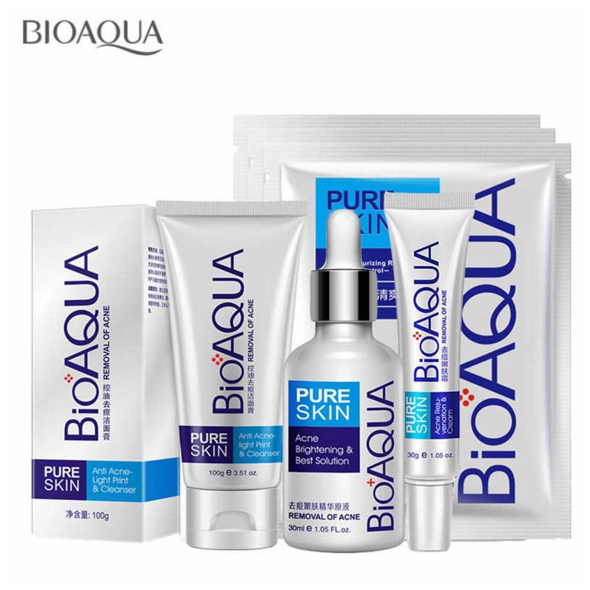

Set Bioaqua Acné Removal

Kit completo de cuidado anti-acné que incluye limpiador, suero y crema, diseñado para controlar el exceso de grasa, purificar los poros y tratar los brotes activos.
--- Piel con acné
Equilibrio, poros afinados
--- Refuerza con
Equilibrio, poros afinados
y frescura duradera.
Regula el exceso de sebo, refina la textura y controla el brillo del clima cálido.
--- Refuerza con
Gel exfoliante de arroz | Protector solar
Contactate con uno de nuestros asesores